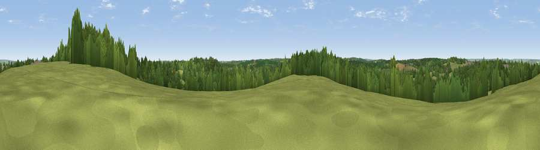

Viewpoint near Pembury
#27992 in England · top 27% of its area beats it · near PemburyThe view, rendered

A 360° render of this exact spot computed from the terrain model, tree cover and land cover — summer colours, afternoon light, calibrated against photographs of famous viewpoints. Real trees, hedges and buildings will differ in detail.
The panorama
Grey silhouette: terrain skyline in each direction (720 bearings, Earth curvature and refraction included). Dashed green: skyline with trees (+15 m) and buildings (+8 m) as obstacles. Blue strip: how far the ground is visible on each bearing.
Where the view opens
Wedge length = distance to the farthest visible ground on that bearing (vegetation-aware). Rings at 10, 25 and 50 km.
What fills the view
52% woodland · 40% grassland · 7% cropland · 1% built-up
Angular shares of the visible panorama (visual magnitude), not map area. Landscape diversity 0.41 (0–1 Shannon).
Key numbers
More beautiful places nearby
The staircase of upgrades: each row has a higher view potential than everything closer. Driving times are estimates from straight-line distance, calibrated against real road routing — check an actual route before setting out.
| Place | Direction | Drive | Score |
|---|---|---|---|
| Viewpoint near Brenchley | NE · 4 km | ~10 min | 51.9 |
| Viewpoint near Brenchley | NE · 5 km | ~11 min | 55.0 |
| Best Beech Hill | SSW · 8 km | ~16 min | 55.6 |
| Viewpoint near Bidborough | WNW · 8 km | ~17 min | 57.2 |
| Viewpoint near Shipbourne | NNW · 16 km | ~28 min | 69.1 |
| Viewpoint near Three Oaks | SSE · 32 km | ~50 min | 69.3 |
| Viewpoint near Guestling Green | SE · 34 km | ~52 min | 72.2 |
| Viewpoint near Fairlight | SE · 35 km | ~53 min | 74.7 |
51.12915, 0.34847 · source: screening · position refined by local search. Computed location — check access rights before visiting.